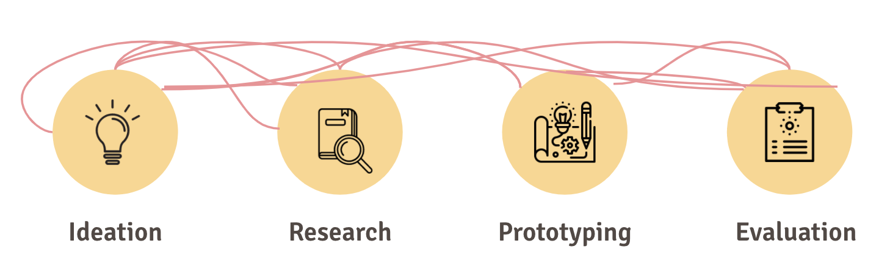
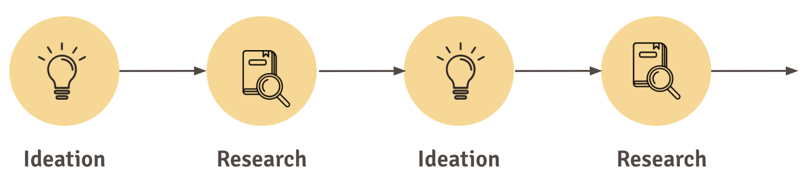
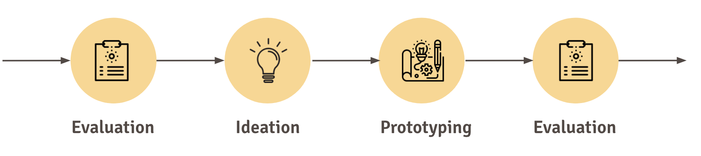
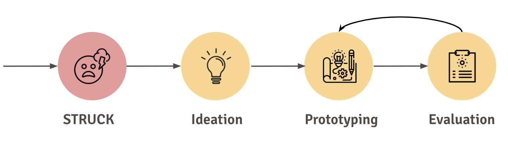
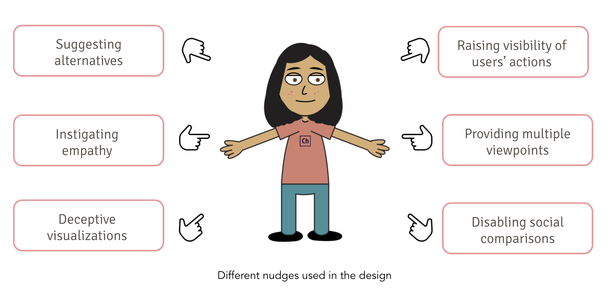
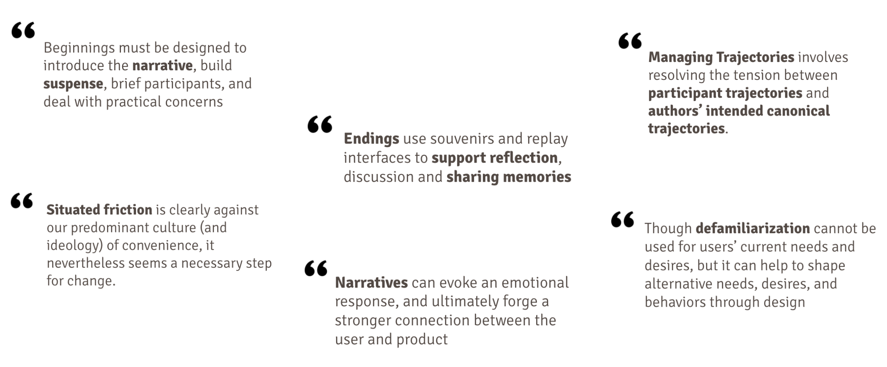

Projects
Critical Design Against Body-Shaming
Individual Project | Duration : 1 weekDesign Goal: To address the social stigma of body-shaming and take a stance against it
This project was done by myself as a part of course Designing User Experiences. The aim was to design for playfulness, criticism and various emotions
(e.g. fear, joy, comfort), all of which create different user experiences.
Methods
Tools
Design Process
Working on this project involved a complex design process, so let's understand the process in parts.
Part 1

During the inital ideation phase I ideated upon different issues that we are
currently facing in the society. So after some research I ended up choosing
Body-Shaming as my topic. Later I started ideating again and listed few places
where this problem is experienced. When I thought about home as the place, I felt
mirror is one of the significant places where some people self-bodyshame. Thus, I
decided to tackle this issue by sticking to the root of the problem i.e. Mirror. After
some research I came up with the following idea:
I have thought of is designing a smart mirror . The smart mirror will have first option saying “making me look pretty”.
When user will select the “making me look pretty” option, the mirror will make the user look ugly. Then the or “make me look ugly”
option will appear and it will actually make the user look pretty. Then at last “make me look the most PERFECT” will appear and the
mirror will simply display the user’s plain reflection. At the end before this experience ends, the mirror will flash the following:
The words “pretty” and “ugly” will be striked out and the mirror will say “you are PERFECT the way you are. Go rock yourself out!”
..something like that.
Part 2

After ideation, I got the idea evaluated from my teacher and colleagues.
The feedback that I got was quite valuable as my idea was lacking interaction
and making "ugly" was not a good thing as it was ironic because as a designer
who am I to decide what's ugly and what's not that too for a critical design.
Then I again moved to ideation phase and this time I involved more interaction
by divide the idea in 4 stages as seen in the sketches to the right.
Thus, sketching
(story-boarding) was the method that I used for evaluation. The feedback I got this
time was even more valuable. It included lack of self-explaination, good narrative,
and good ux-writing. Moreover, reading the literature from the course helped me a
lot to develop the idea into a better form.
Part 3

Even after a lot of thinking, I was struck. Finally I tried enactment method
where I made up a mirror out of fairy lights and created various scenarios, put
myself into the character and tried various dialogues. More the "From Interaction
to Trajectories" paper by Benford, Giannachi, Koleva & Rodden helped to me to form
my overall structure of my idea. They helped me to design the beginning and ending
of my idea carefully by including introducing the narrative, building suspense and
then using souvenirs to remember the experience and reflections.
To further design the details in the idea, I used the reference from "23 Ways to Nudge" by Caraban, Karapanos, Gonçalves & Campos.
The nudge-categories framework helped me to understand the implications of my idea. Moreover, the Laws of Emotion by Frijda helped me
to understand and support my idea in the right direction. Overall all the literature, enactment and some my own ideation helped me to
come up with the final idea. I used the video prototyping and got it evaluated again. This time the idea was appreciated more and suggestion
received was about adding inclusiveness which I will work in the future.
Design
Design Rationale based on Literature


References
[1] Caraban, Karapanos, Gonçalves, and Campos. (2019) 23 Ways to Nudge: A Review of Technology-Mediated Nudging in Human-Computer Interaction
[2] Frijda, N. H. (1988). The laws of emotion. American Psychologist
[3] Genevieve Bell, Mark Blythe, and Phoebe Sengers. (2005) Making by making strange: Defamiliarization and the design of domestic technologies
[4] Laschke, M., Diefenbach, S. and Hassenzahl, M. (2015) “Annoying, but in a Nice Way”: An Inquiry into the Experience of Frictional Feedback
[5] Benford, Steve, Giannachi, Gabriella & Koleva, Boriana & Rodden, Tom. (2009). From interaction to trajectories: Designing coherent journeys through user experiences
© Copyright © All rights reserved